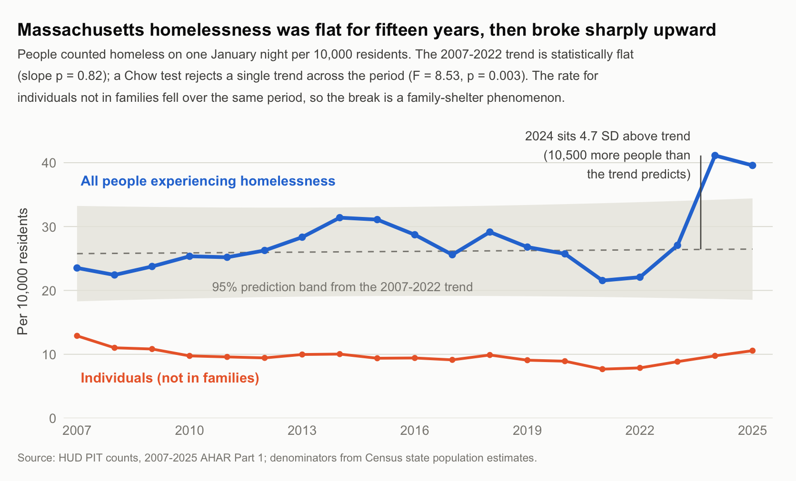
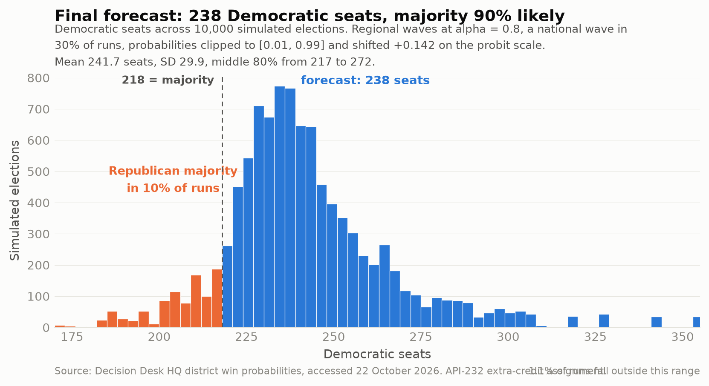
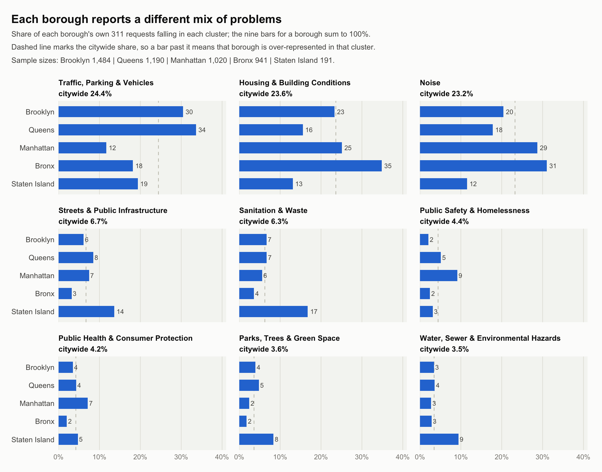

Memo to the Governor of Massachusetts·R·HUD Point-in-Time counts, 2007–2025
The standard framing — homelessness has been rising for a decade — does not
fit Massachusetts. The state shows no detectable upward trend from 2007 to 2022
(slope p = 0.82), then a 89% jump in two years that a Chow test separates from
trend at F(2,15) = 8.53, p = 0.003. Families are 89.6% of the increase; homelessness
among individuals actually fell.
Those are different problems with different instruments. The memo is equally
explicit about what 19 state-years cannot do: describe structure, yes; identify a
cause, no.

RStructural breakPolicy memo
Monte Carlo simulation·Python·435 districts, 10,000 runs
Treat 435 races as independent coin flips and the Democrats clear a majority in
100.0% of simulations. Decision Desk HQ, using the same
district probabilities, published about 78%. The probabilities were never the
disagreement — the dependence structure was.
The model adds correlation by sharing random draws across Census divisions and
nationally, which widens the distribution without disturbing any district's
marginal win rate — a property the code measures rather than asserts. It is the
same arithmetic that makes a portfolio look safe in a stress test.

PythonMonte CarloCorrelated risk
Descriptive analysis·R and Python·NYC 311, ~4,800 requests
Four bugs that run without error and produce charts you would believe: a filter
applied before grouping that silently answers a different question, negative
resolution times from records closed before they were created, an average of
averages that gives a two-case category the weight of a 400-case one, and a
24-month series collapsed into 12.
Also a taxonomy covering all 123 complaint types, built to fail loudly
rather than quietly drop what it does not recognise.

RPythonData quality